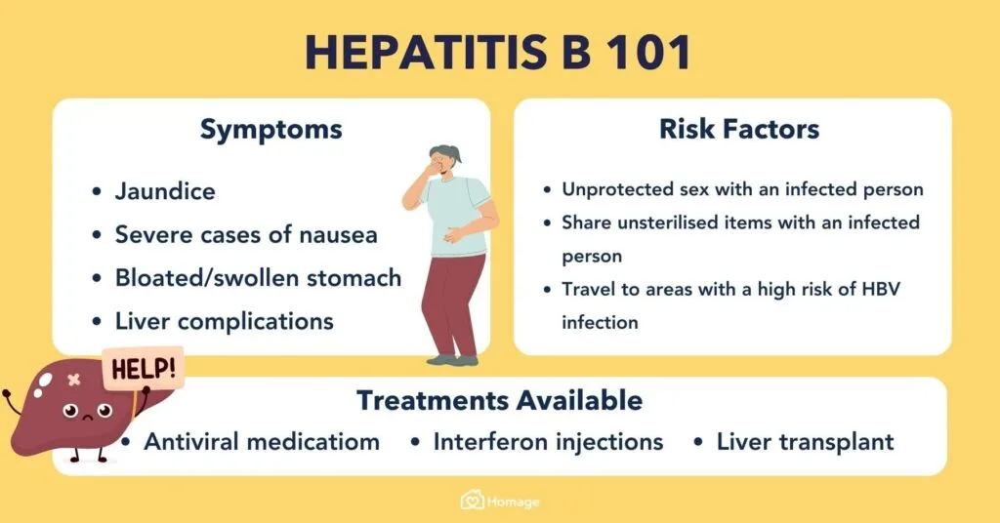
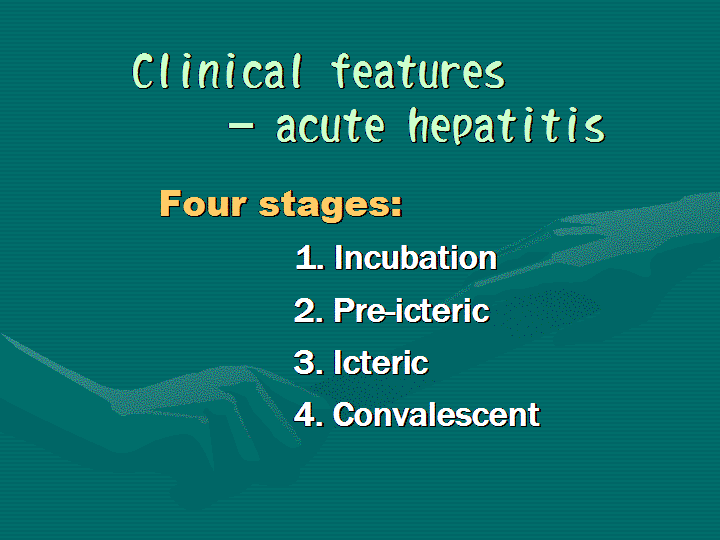
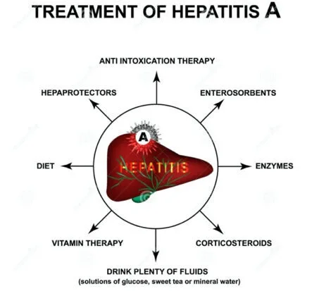

Expanded Nursing Uganda Explanation
Opportunistic Infections and Hepatitis links cause, transmission, prevention, assessment and treatment support. Good nursing notes should include infection prevention, danger signs, adherence support and community health education.
Contents, 15 sections (tap to expand)
01 OPPORTUNISTIC INFECTIONS IN HIV/AIDS
Opportunistic infections (OIs) are infections affecting HIV patients with weakened immunity, indicated by a white blood cell count below 200 cells/cm³ (14%).
- Advanced HIV infection makes individuals vulnerable to opportunistic infections or malignancies. These infections exploit the weakened immune system.
- Childhood acquisition of OIs and HIV often occurs from infected mothers.
- Women living with HIV are more prone to co-infections with opportunistic pathogens, increasing the risk of transmission to their infants.
- Adolescents with HIV, including long-time survivors of perinatal infection, are increasingly common. Treatment guidelines also apply to youth living with HIV who have not yet completed pubertal development.
02 Examples of Opportunistic Infections
- Category Infection Explanation
- Bacterial OIs Pneumococcal pneumonia A bacterial infection causing severe respiratory illness, commonly affecting HIV patients due to weakened immunity.
- Pulmonary tuberculosis A serious infectious disease that primarily affects the lungs, prevalent in HIV patients due to compromised immune defenses.
- Salmonellosis An infection caused by Salmonella bacteria, leading to severe gastrointestinal symptoms, more common in immunocompromised individuals.
- Extra-pulmonary tuberculosis Tuberculosis infection occurring outside the lungs, such as in the lymph nodes or bones, often seen in advanced HIV cases.
- Viral OIs Herpes zoster Also known as shingles, caused by the reactivation of the chickenpox virus, leading to painful skin rashes in HIV patients.
- Recurrent/disseminated viral herpes simplex Chronic or widespread herpes simplex virus infections, more severe and frequent in individuals with HIV.
- Parasitic OIs Pneumocystis carinii pneumonia A fungal infection (previously classified as parasitic) causing severe lung disease, a common and life-threatening infection in HIV patients.
- Toxoplasmosis An infection caused by the Toxoplasma gondii parasite, leading to severe neurological issues in immunocompromised individuals like those with HIV.
- Fungal OIs Cryptosporidium A parasitic infection causing severe diarrhea, often found in HIV patients due to their weakened immune systems.
- Oro-pharyngeal candida A fungal infection in the mouth and throat, also known as thrush, common in HIV patients.
- Candida Esophagitis A severe fungal infection of the esophagus, causing difficulty in swallowing and chest pain, prevalent in advanced HIV cases.
- Histoplasmosis A fungal infection caused by inhaling Histoplasma spores, leading to lung disease, more severe in immunocompromised patients.
- Coccidioidomycosis A fungal disease also known as Valley fever, causing respiratory issues, especially severe in those with weakened immune systems.
- Cryptococcal meningitis A life-threatening fungal infection of the brain and spinal cord, common in advanced HIV/AIDS patients.
- Opportunistic Cancers Invasive cervical cancer Cancer caused by the human papillomavirus (HPV), more prevalent and aggressive in women with HIV.
- Kaposi sarcoma A cancer caused by human herpesvirus 8 (HHV-8), leading to lesions on the skin and other organs, commonly seen in HIV patients.
- Non-Hodgkin lymphoma A type of cancer affecting the lymphatic system, more common and aggressive in individuals with HIV.
- Other OIs Oral hairy leukoplakia A condition characterized by white patches on the tongue, caused by Epstein-Barr virus, indicating immunosuppression in HIV patients.
- Leukoencephalopathy A rare, progressive viral disease affecting the white matter of the brain, often seen in severe immunocompromised states like advanced HIV.
- Progressive multifocal leukoencephalopathy A demyelinating disease of the central nervous system caused by the JC virus, highly fatal in HIV patients.
03 Causes of Opportunistic Infections:
- Poor adherence to treatment
- Presence of other diseases (e.g., juvenile diabetes mellitus)
- Delay in identification of the infection
- High viral load
- Poor nutrition
- Exposure to opportunistic infectious agents
- Ingestion of substances contaminated with opportunistic infectious agents
- Missing out on immunization programs
- Poor hygiene
- Poor sanitation
- Poor ventilation
04 Prevention of Opportunistic Infections:
- Avoidance of contact with the disease agents
- Proper treatment of other underlying diseases
- Adherence to HIV drug treatment
- Immunization of children against killer diseases
- Ensuring that children consume well-cooked food and boiled water
- Early identification and treatment of opportunistic diseases
- Health education of the family and infected child about opportunistic infections
05 HEPATITIS B
Hepatitis B is a chronic liver infection characterized by inflammation of hepatocytes caused by the hepatitis B virus.
06 Transmission:
- High : Blood
- Moderate : Semen, Urine, Serum, Wound exudate, Vaginal fluid
- Low/Not Detectable : Saliva, Feces, Sweat, Tears, Breast milk
07 Stages of Hepatitis B:
- Immune Tolerance : Represents the incubation period, lasting approximately 2-4 weeks in healthy adults, and often decades in newborns.
- Immune Active/Immune Clearance : Inflammatory reaction occurs with active viral replication. Duration varies; for acute infection, approximately 3-4 weeks; for chronic infection, up to 10 years.
- Inactive Chronic Infection : Host targets infected hepatocytes and HBV, with low or no measurable viral replication in serum. Anti-HBe can be detected.
- Chronic Disease: Chronic HBeAg-negative disease may emerge.
- Recovery : Virus undetectable in blood, antibodies to viral antigens produced.
08 Clinical Features:
Symptoms can be symptomatic or asymptomatic:
- Weakness, malaise, low-grade fever
- Nausea, loss of appetite, vomiting
- Pain or tenderness over right upper abdomen
- Jaundice, dark urine, severe pruritus
- Enlarged liver
- Complications: liver cirrhosis, hepatocarcinoma
09 Investigations:
- Hepatitis B surface antigen positive for >6 months
- Hepatitis B core antibody: Negative IgM and Positive IgG to exclude acute hepatitis B infection
- Liver tests, repeated at 6 months
- HBeAg (can be positive or negative)
- HBV DNA if available
- HIV serology
- APRI (AST to Platelets Ratio Index): a marker for fibrosis
- Alpha fetoprotein at 6 months
- Abdominal ultrasound at 4-6 months
10 Management:
General Principles:
- Screen for HIV and refer if positive.
- Refer to a regional hospital for specialist management if HIV is negative.
- Antiviral treatment is given to prevent complications and usually for life.
- Patients with chronic hepatitis B need periodic monitoring and follow-up for life.
- Periodic screening for hepatocarcinoma with alfa fetoprotein and abdominal ultrasound once a year.
11 Treatment with Antivirals:
- Treat with antivirals based on specific criteria.
First-line antivirals:
- Adults and children >12 years or >35 kg: tenofovir 300 mg once a day
- Child 2-11 years (>10 kg): Entecavir 0.02 mg/kg
Health Education:
- Management is lifelong.
- Bed rest is recommended.
- Avoid alcohol as it worsens the disease.
- Immunization of household contacts.
- Do not share items that the patient puts in the mouth (e.g. toothbrushes, cutlery, razor blades).
12 Nursing Uganda Clinical Lens
Use Opportunistic Infections and Hepatitis as a practical nursing topic, not only a memorized definition. Link cause, transmission, incubation, clinical features, treatment support and prevention.
- What to understand first: define opportunistic infections and hepatitis, identify the normal or expected pattern, then explain what changes when the patient is unwell.
- Why it matters in care: the nurse must recognize risk early, explain findings clearly, document accurately and know when to escalate.
- How to revise it: connect each point to assessment, nursing diagnosis or care problem, intervention, rationale and evaluation.
13 Assessment Guide
- Temperature, pulse, respiratory status, hydration, pain, rash, wounds, stool, urine or sputum changes.
- Exposure history, travel, contacts, vaccination status and comorbidities.
- Specimen orders, isolation needs, antimicrobial history and danger signs.
14 Nursing Priorities, Rationales and Outcomes
- Use standard precautions and transmission-based precautions where needed.
- Support hydration, nutrition, medicines, monitoring and early referral for severe disease.
- Teach prevention, adherence, hygiene, safe water, vector control or contact tracing as relevant.
The rationale for these priorities is patient safety: nursing actions should prevent deterioration, reduce discomfort, support recovery and create clear evidence for the next caregiver.
- Expected outcome: Symptoms improve, complications are detected early, transmission risk is reduced and treatment is completed correctly.
15 Patient Teaching and Revision Check
- Explain opportunistic infections and hepatitis in simple language the patient or caregiver can repeat back.
- Teach warning signs, medicine or follow-up instructions, hygiene or lifestyle points where relevant.
- For exams, prepare a short answer using: definition, causes or risk factors, signs, assessment, management, complications and prevention.
- For ward practice, document baseline findings, actions taken, patient response and the plan for review.
Illustrations and Diagrams (3)



Related Video Lectures
Watch nursing lecture videos on YouTube for this topic. Opens in a new tab.
Watch on YouTubeExternal link: YouTube may use its own cookies and terms. Nursing Uganda is not affiliated with YouTube.